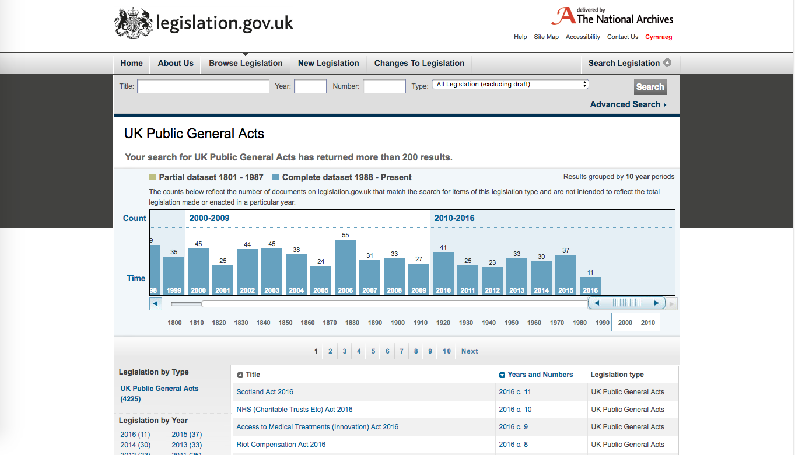
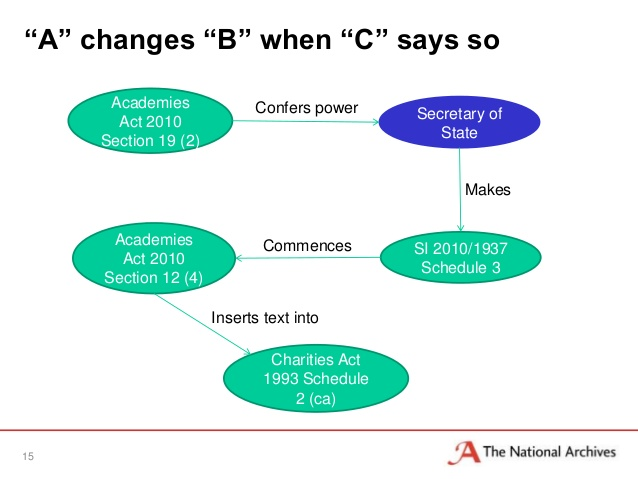
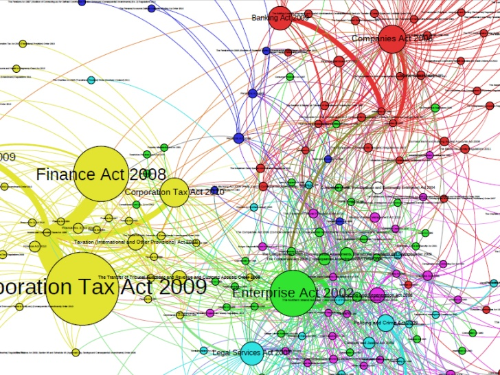

Case study: Legislation.gov.uk
Improving the UK digital statute book through collaborative maintenance
- Summary
- Facts and figures
- What is the challenge?
- The complexity of the task
- An inefficient process
- How TNA are solving the problem
- Adopting a new philosophy
- Simplifying the tasks
- Implementing a new process
- Collaborating with others
- Motivating participants
- Maintaining the statute book: the impact of a collective approach
- Better data and more efficient processes: how The National Archives benefited
- Breaking silos in government: how participants benefited
- Benefits for users
- What The National Archives learned
- Questioning the status quo
- The need for open
- Focusing on user needs
- Taking an iterative approach
- Managing expectations
- Changing the team culture
- Next steps: planning future projects
- How to cite this case study
Summary
 Legislation.gov.uk is a unique public service built on collaboration and open data. Screenshot.
As the official archive and publisher for the UK Government, The National Archives holds over 1,000 years of documents of national significance. As a non-ministerial government department, it also shares expertise on information and records management, with public- and private-sector organisations across the UK.
A core responsibility of The National Archives to publish the UK’s legislation. It does this online through its legislation.gov.uk website, publishing legislation as it is enacted by parliament, the changes it makes to existing legislation and the result of these changes, giving a picture of how the law stands today. With a user-friendly interface, the website provides high-quality, machine-readable open data which others can use to build commercial and non-commercial tools and services.
The task of providing up-to-date legislation is difficult and involves a lot of human effort. New legislation often amends a large amount of existing legislation, requiring changes to be made across the statute book. A lack of resources and inefficient past approaches meant that the team at legislation.gov.uk inherited a huge backlog of amendments, made more numerous and complex by the process of devolution.
The main user need was for up-to-date, revised legislation. The team was not big enough. The task had grown and become more complicated. We were running a deficit and building up a backlog.
– John Sheridan, Digital Director and Head of Legislation Services
In need of a radical solution, the team came up with the Expert Participation Programme. By redesigning the legislation update process and building tools to enable it, they could recruit and train external people to contribute. Participants from public- and private-sector groups joined, realising the value that open, up-to-date legislation data would bring them.
By making data open, we can incentivise people who will benefit from [it] to help curate the information we are managing […] Open data provided a philosophical bedrock upon which the rest of the model could evolve.
– John Sheridan
Legislation.gov.uk recruited 72 participants from 10 different organisations. Across 2015/6, just over half (51%) of the update was done by people outside of The National Archives. This has enabled them to apply almost five times more amendments in the same amount of time, deal with with over half the backlog of unapplied amendments and bring 80% of all legislation on legislation.gov.uk up to date. Despite having to research over 150,000 amendments and 3,000 commencement orders, they have achieved all this in just five years.
But The National Archives are not the only ones who have benefitted from the Expert Participation Programme.
Participants in the public and private sectors – such as the Department for Work and Pensions, the Welsh Government and previously the Practical Law Company – have been given high-quality tools, training and support they would not be able to replicate in-house.
Data users have been enabled to improve existing services they offer, for instance ICLR Online enhances their case law lookup service by integrating references to enacted legislation. Others have been able to build innovative new products, for example ODI Startup Amiqus have built Amiqus Inform, a service that provides consumers with information on their legal rights.
End users – from lawyers and legal researchers to citizens and businesses interested in knowing how the law affects them – benefit from the user-friendly website giving them up-to-date legislation.
Facts and figures
- The National Archives developed a collaborative ‘Expert Participation Programme’, to get external help updating legislation.gov.uk with new UK legislation
- Together, they have almost doubled the amount of up-to-date legislation, can apply amendments almost five times faster and have halved the existing backlog
- Many have benefitted from the high-quality tools, processes and data provided by the programme, from participants to users. They have recognised efficiencies and built new products based on up-to-date legislation
- The model is fundamentally replicable for many complex open datasets that require human intervention
- Providing open data, embracing open culture and focusing on user needs were key to the success of the programme
What is the challenge?
The statute book of the UK – a record of all legislation passed and enacted in the UK – has been published in many forms over the years. With the development of the web, it was soon clear that having it available online was in the public interest. Two separate services emerged from different parts of government to provide access to different parts of the statute book. In 2008, they began to work together and through joint research soon realised their users, and their users’, needs were essentially the same.
This resulted in the teams being brought together at The National Archives (TNA) to create a single comprehensive service – legislation.gov.uk. As John Sheridan, Digital Director and Head of Legislation Services at TNA explains:
The aim for legislation.gov.uk was to create a service that provided high-quality public access to legislation. [The] data-user need was very much around new legislation, particularly for commercial users. The end-user need was for the revised legislation – ‘What does the law say today?’ We wanted to build a service that met [both] those user needs.
The complexity of the task
Publishing ‘as enacted’ or new legislation as it is made is relatively straightforward, even when providing it as structured, high-quality open data. Providing up-to-date or ‘revised’ legislation – a picture of how the law currently stands – is much more complex. This is because often items of new legislation (amending legislation) change or have ‘an effect’ on existing legislation. Each one of these effects results in either a textual change or an annotation to an existing piece of legislation (amended legislation).
For a single piece of legislation to be up to date, all the effects on it from all subsequent legislation must be applied. They must be applied in chronological order so that multiple snapshots, or revisions, can be shown across time. The process is made even more complex because different effects – even within the same Act – are brought into force at different times by ‘commencement orders’, which are separate items of secondary legislation. Given the importance of accuracy in legislation and the need for large amounts of human input, there is a low tolerance and high potential for error.

Slide from a talk by John Sheridan, The National Archives
The number of changes to the statute book – in terms of effects – has been increasing. Primarily, as a byproduct of devolution, which “has been quite a challenge,” according to Clare Allison, Strategy and Development Manager. Three new legislative bodies, the Scottish Parliament, Welsh Assembly and the Northern Ireland Assembly, can now each generate effects on existing Acts, where previously only one UK-wide change could be made. This also makes the task more complicated, because each of these only apply to a certain geographical extent and have to be presented “to the end-user in a way that’s not going to completely baffle them”, Clare adds.
An inefficient process
When legislation.gov.uk began, the team inherited a complicated system for updating legislation. This involved the highly trained legal editors going through two ‘very separate’ processes. Clare explains what the first entails:
When a new piece of legislation was made or enacted, we would make a hard copy, read it and then write on it where that piece of legislation affects legislation that already exists. [Then] they would compile those […] into a spreadsheet. That would go off and be published in its own right on the changes to legislation page on legislation.gov.uk. So there is a list of effects that we know.”
Separately, the same legal editors would update Acts from a priority list of around 50 Acts at any one time. To do this, Clare explains, you would take the Act you want to update “then from the spreadsheets that had been compiled, you would look at all the effects that hit [that] Act […] Get that in a [different] spreadsheet which you use as a worksheet and at that point, you would go through all the effects and […] work out when they came into force and where they extend to geographically.” Once all this research was done, they would apply them in a separate editorial process.
This system had several drawbacks. Firstly, it was heavily paper-based. Secondly, carrying out all the tasks required at least six months of training. Thirdly, it was very inefficient because, as Clare puts it, “you are constantly revisiting the [same] legislation again and again […] and essentially doing [the same] research many times”. This is because every person who was looking up an effect from the same Act had to look into the commencement orders for that Act.
The culmination of these issues presented the team with a significant challenge. Circumstances around the formation of legislation.gov.uk and its predecessors meant they had accrued a significant backlog of unapplied effects which at its worst totalled a little over 160,000. This backlog meant that “to all intents and purposes, less than half, maybe even less than a third of the revised legislation on legislation.gov.uk was up to date,” says John. They cannot be more specific because at the time they did not even have the data to know just how much legislation was not up to date.
We calculated that in a typical year there were at least 15,000 amendments that were being passed and we were able to apply, in our best year, no more than 10,000. So that meant that we were, in our best ever year, only able to do two thirds of the job,” John explains. The result was “a viability question: if you can’t keep pace then, propositionally, you don’t have anything. If you’re not keeping pace then you’ve got a product [that] is getting worse and is not meeting users’ needs.”
How TNA are solving the problem
Faced with such an enormous challenge, John explains:
It was a desperate situation […] tweaking, adjusting round the edges, even doubling our productivity [would not have helped]. If we had doubled our productivity it would taken us 20 years [to bring all legislation up to date]. There was no small change that would come close to making the difference.” Clare agrees: “there was absolutely no way without some real radical overhaul that we were ever going to get fully up to date.”
The radical answer that TNA came up with was to create their Expert Participation Programme, launched in 2012. The implementation of this collaborative model demanded they completely overhauled their process for updating legislation, invested in building new tools, changed their internal culture and, most importantly, recruited external partners who saw value in contributing effort and resource.
Adopting a new philosophy
To begin with, the Expert Participation Programme adopted “classic people/process/technology-type thinking”, John explains, and “figured that [they] needed to move the dial on each one.” They needed more efficient processes supported by better tools, but they also needed more people. There was no chance of recruiting enough to make a difference, though, given the prevailing climate of cost saving within government.
At the same time, Clare says they “always had people who were saying ‘Well can’t we help you?’ or ‘Can you give us your data and we’ll update something?’ or [for government departments] ‘We’ve got a copy that we update over here […] can’t we give it to you and you can use it?”. But they could not enter ad-hoc relationships of this kind, because their systems and processes did not allow them to.
They did, however, recognise the potential of working with external partners. As John puts it, “[philosophically] we don’t much care whether the editor, the legal editor who does a task, is employed by us. What we care about is that they have followed our editorial practice and whether the work they have produced meets our standard.” They soon realised, he says, that “the only way [maintaining the country’s statute book] can affordably be done is as a shared endeavour, a shared responsibility.”
Armed with this philosophy of shared responsibility, the TNA had to work out how to enable and encourage others to take on some of the task.
Simplifying the tasks
The first major question they had to answer was: “How do you make a complicated task something that you can get somebody else to do?” says Clare. “It’s all very well and good if you open your data up [for editing],” but you are stuck if you haven’t got “a mechanism or some answer to that problem”. This is because it took at least six months to train a legal editor and it was unlikely that anyone would be able to commit that amount of time.
“The very nature of a participation programme is that you need to be able to get people in, train them relatively quickly [and] give them definable tasks that they can follow,” explains Clare. John adds that this meant they had to “rethink [their] editorial processes quite profoundly, re-design them [...] separating difficult tasks which require many years of experience from easier-to-do tasks that you can learn how to do quite quickly.”
Implementing a new process
To begin with, TNA needed to research all the amendment and commencement data for the effects that had not been applied. “This turned out to be a far bigger undertaking than I think we realised when we started. It has taken five years to get everything up to date,” explains Clare. The early external partners they engaged did a lot of this research, in particular the Practical Law Company (PLC). The outcome was that “having researched 160,000 amendments and 3,000 commencement orders in the data, we don’t need to do any of that again,” notes John.
With this task out of the way, they were able to focus on implementing the new process for applying amendments. This meant investing in new tools and technology to support it. The tools they built needed to enable the integration of external participants into the internal workflow which required the technology itself to be fundamentally open and accessible. To do this they opted to “revise legislation.gov.uk data directly”, says Clare, rather than maintaining a separate database. This lead them to build “a front-end editorial system that worked [entirely] off the back of legislation.gov.uk”.
By investing in the technology and adopting a ‘database of amendments’ understanding, and technically implementing it, they were also able to automate many non-textual annotations. For example, changing the geographic extent of certain sections – one of the key challenges generated by devolution – is now automated, which not only saves time and effort but also reduces the potential for error in writing such annotations.
Clare explains that “now when we get our new effects in, we do all the research [internally], from the outset, [and this] feeds through to the editorial system [...] where [it is] presented to [participants as] tasks that [they] can follow.” This allows them to utilise the internal legal expertise to do the initial, complex research phase and enables participants to help by carrying out the actual updates. The TNA legal editors then also act as ‘guardians of quality,’ by reviewing all the effects that have been applied.
This new process allows TNA to capitalise on the inherent network effects in the ‘database of amendments’. As John explains:
[This is] because the statute book is so entwined, even if you only care about a bit of it, you benefit from work that other people are doing who maybe only care about a different bit of it. You benefit from the sum total effort because it's basically a big network of amendments.
 Slide from a talk by John Sheridan, The National Archives
This allows a wide variety of participants, with different motivations and interested in different areas of legislation, to contribute. These are then able to focus on the area that is relevant to them, while contributing to the project as a whole.
Collaborating with others
The final, and perhaps the most difficult, piece of the puzzle, John says, was in “starting […] conversations with partner organisations, people who we think might have an interest in supplying some resource to get this done.” To convince these organisations to commit resources to this shared endeavour, they would need to see the value they themselves could derive. John says the pivotal mechanism was “by making this information open, we can incentivise people who will benefit from that open information to help curate the information we are managing.”
This approach was clearly successful, over the course of the project a total of 72 people from across 10 different organisations outside TNA have contributed time to the project. This includes the key involvement of the private sector, especially in the early stages of the project. John concedes that “we never would have got [the groundwork] done […] without the investment of the private sector and we’ve been benefiting from it hugely ever since”.
One of the key partners early on was the Practical Law Company (PLC). “Because we were making our data open”, explains John, “they saw an opportunity to pull back the value of what was being produced into their own products […] [they had] a commercially driven incentive because of the opportunity to exploit and use our data.” While they no longer work on the programme, because of a change in priorities following PLC’s acquisition by Westlaw, the team still maintain a good working relationship.
There are currently 21 staff outside TNA actively carrying out work on the participation programme. By contrast, only 19 of the 27 people in the Legislation Services Team at TNA focus on providing up-to-date legislation on legislation.gov.uk. External staff often only work part-time on the programme, many having other responsibilities within their own organisations. Almost all of the 21 current expert participants are based in the UK public sector, but their roles and motivations differ by organisation. They include employees of central government departments, devolved administrations and a couple of PHD students.
Motivating participants
Participants who contribute to legislation.gov.uk include a team at the Department for Work and Pensions (DWP) who work on the programme part-time. The team is responsible for producing and publishing the ‘Law Relating to Social Security and Child Support’ guide for DWP staff. Because they had already been doing this before the creation of legislation.gov.uk, they were fast tracked to reviewer status. When TNA reached out to the team in 2011, the DWP realised the process they were using to update legislation had become outdated and time consuming. Michael Vidal, Publications Editor at DWP explains that the team looked into a number of different ways to address this but realised:
The Expert Participation Programme offered the best deal in terms of a user-friendly interface, ease of use, good cross-government working and of course value for money!
This is unsurprising for DWP, according to John, who states that:
The product, from their perspective, is a product they can make available to the 70,000 or more people who work in DWP. [By giving them] access to up-to-date legislation, DWP don’t have to spend the money buying [it] commercially – which would be very expensive for that number of people.
Another central government department, The Department for Environment, Food and Rural Affairs (Defra), also have two part-time expert participants. Their motivations are more focused on providing a service to external users. “For Defra, it's about trying to reduce the burden on business for finding out what the state of current regulations are,” John notes.
Employees of devolved governments also participate in the programme, with the Welsh government providing two contributors. There is also a team of five at the Statutory Publications Office (SPO) in Northern Ireland, who have collaborated on the project since 2006 and are therefore pretty independent. Both administrations have similar motivations, as John lays out:
For the Welsh government it’s about curating and managing the statute book for Wales, similar for Northern Ireland […] In both cases the government has employed several editors who work on our programme, using our systems, processes and tools and benefit from the shared endeavour.
Maintaining the statute book: the impact of a collective approach
Since the programme was launched in 2012, in the face of a large and increasing backlog of amendments, the collective approach to maintaining it has been overwhelmingly successful. Judith Riley, Statutory Publishing Manager, explains, “the Expert Participation Programme has transformed how we are able to manage the statute book.”
Better data and more efficient processes: how The National Archives benefited
Under the previous system, they could only apply a maximum of 10,000 effects per year. Using the new, collaborative process they were able to apply 4,000 effects in February 2016 alone. This means they can apply almost five times as many effects. Though this depends on the level of input from participants, which varies on a monthly basis, overall in 2015/6 participants carried out just over half (51%) of the update work. The backlog – which stood at over 160,000 unapplied effects – has been reduced to just 70,000 due to this dramatic increase in productivity. They have been able to deal with over half the backlog of effects they had accumulated.
While these figures give an indication of the impact on productivity of the Expert Participation Programme, the number of effects is partially misleading because of their imperfect distribution. The vast majority of Acts have less than 50 effects, whereas around 50 key pieces of legislation are together responsible for around 50,000 effects. The proportion of legislation that is up to date provides a more sensible measure of the team and participants’ progress. Where once all they knew of this figure was that it was “less than half, maybe even less than a third,” according to John, now 80% of legislation are fully up-to-date, effectively doubling the amount. The rest of legislation is all up-to-date with effects enacted to the end of 2002.
The other impact has been on the quality of the data itself. The system now records additional facts within the data – for instance, it stores geographic extent of amendments. This means TNA will be able at some point to add a feature to the user-friendly front-end of legislation.gov.uk which allows you to view legislation only as it applies to a certain geography.
Also according to The Stationery Office (TSO) who worked for TNA to set up legislation.gov.uk, there were also efficiency benefits of the unified website service. According to the TSO’s retrospective case study, “having a single site, combined with new tools and processes, the use of open standards and open-source software, has cut the cost by a third.”
Breaking silos in government: how participants benefited
One of the biggest impacts of the Expert Participation Programme has been the breaking down of silos across government. It has allowed different teams performing similar tasks across government cooperate. By working together on a single system – with a single process toward a single canonical source of legislation – they have been able to reduce duplicated effort, and share the task, training and skills.
An improved platform and ongoing support for DWP participants
For participants themselves the benefits have been huge. Michael Vidal says: “The impact of our link with The National Archive has been immense.” Out of the programme they have been able to ensure that their “primary stakeholders – who are mainly decision makers in job centres – now have immediate access to up-to-date legislation. The fact that there is quick and easy access to a timeline of changes to amended legislation is extremely helpful, as they can now see [what] the law says at any given point in time,” Michael explains.
For the team who update legislation in DWP, they now have a “high-end platform to work on, [which] The National Archive team are continuously looking for ways to improve,” says Mike Vidal. Their team of seven editors have also been given “extensive training and guidance by TNA in the use of their editorial system [and] they have always been on-hand to answer any queries or issues.” By receiving training, support and tools from the TNA, DWP are able to focus on the update task, rather than handling all these in-house.
Promoting the rule of law in Wales with a user-friendly site: how the Welsh government benefited
The Welsh Office of the Legislative Counsel serves as another example of participants benefitting from the Expert Participation Programme.
Rosalind Young, Legislation Annotator at the Welsh Office of the Legislative Counsel says the counsel has “witnessed substantial progress” since joining the project two years ago. From a participant perspective, she explains, “the system created by the programmers has developed into a sophisticated and user-friendly site.” Beyond the system itself she explains that the programme as a whole has been beneficial.
Although I am based in Cardiff, and employed by the Welsh Government, the team at the National Archives have offered me continual support throughout my involvement. I have enjoyed the training opportunities and the chance to meet other participants.
Rosalind goes on to explain that “strong and sustainable links have been forged between the Welsh Government and The National Archives, and the mutual benefits of participating are felt on both sides.” Another key benefit to the Welsh government was that “the visible changes on the website are sure to reinstate the value of legislation.gov.uk in promoting the rule of law and the accessibility of the law in Wales,” Rosalind says.
Checking legislation is fully consolidated: how PLC benefited
As early participants, PLC felt direct benefits of employing people to work with TNA. In a comment early on in the process Elizabeth Woodman, then Commercial Director at PLC, explains that:
“By employing people to work with National Archives, [...] we've been able to ensure that the Companies Act 2006 is now fully consolidated on legislation.gov.uk. This is a particularly important piece of legislation for many of our customers.
Benefits for users
Users of the legislation.gov.uk website and open data have arguably benefitted the most from legislation.gov.uk and the improvements made by the Expert Participation Programme. End users – from lawyers and legal researchers to citizens and businesses interested in knowing how the law affects them – benefit greatly from the website itself for displaying up-to-date legislation. The service provides searchable access to the statute book and labels legislation that has not yet been updated clearly, so users can understand whether it represents legislation as it stands.
This has meant that even early on in the process, TSO recorded that “by June 2011, the monthly use of legislation.gov.uk was 2.5 times the combined use of the previous two websites [...] with monthly page views of up to 50.5 million.” It also noted that “over 75% of user satisfaction ratings are either ‘satisfactory’ or ‘very good’.”
Improving case-law services: how the Incorporated Council of Law Reporting for England and Wales (ICLR) benefitted
What The National Archives learned
The success of the Expert Participation Programme can be attributed to a wide range of different factors. These include process, how you get hold of people, embracing the network effect and forging a data-driven approach to tasks, according to John.
This synthesis is not unique to The National Archives. Nor is the challenge of maintaining large datasets that require a great deal of human intervention, like the statute book. This leads the team at legislation.gov.uk to believe that the model could have much wider-reaching applications for a range of different problems. John believes that:
There is plenty of potential for expert participation for curating and managing many datasets […] I think most datasets that require a human intervention will have complex processes, require quite complex interactions [and] I am pretty sure there are network effects sat underneath.
For John, the reason why this has yet to happen across a wide range of data management activities is the size and nature of the challenge they faced:
I suspect the reason it hasn’t happened elsewhere is it’s quite unusual to be in quite such a deep hole. We were really desperate, I think it’s the classic – there was no small change that would come close to making the difference. I think it’s that dynamic – when the problem’s that difficult – in a way it's quite liberating because you can think that radically about solving the challenge.
While others might not face such dramatic challenges, if they wish to replicate the successes of this project, there are some key aspects they must understand.
Questioning the status quo
Key to ensuring this level of culture change is not being afraid of challenging the ways that tasks are approached. Clare explains that “quite often there is no point in fighting a system to try [to] make things how they always were, when it turns out the way they always were was just because of another old system. It’s always worth going back to it to say ‘why are we actually doing it like that?’”
The need for open
The Expert Participation Programme fundamentally relies on open data. Without open data, it would be seemingly impossible to motivate partners and participants to commit time and resources without receiving any benefit. As John explains:
Open data is a really important component. It underscored that this was for everyone, it wasn’t just about making legislation.gov.uk, this is about making a better, up-to-date database of legislation that could be used by anyone. And used as open data for commercial purposes, or for hacking purposes, or whatever. The open data provided a philosophical bedrock upon which the rest of the model could evolve, and I think that that is really important that without that bedrock then propositionally the rest would start to collapse.
Focusing on user needs
The focus on user needs is clear in everything from the design and nature of legislation.gov.uk to the provision of high-quality open effects data for data users. This focus extended beyond product users’ need to the needs of the expert participants themselves. “The most important thing is having a definable task that you can give to people. And I think that is something we have got right,” says Clare. However, she believes that they would have benefitted from going even further “in an ideal world, we would have spent more time on documentation […] [and] a bit more user testing as we’d gone along from the perspective of the editor.”
Taking an iterative approach
“You don’t know all the answers when you get going, you don’t know how difficult it’s going to be. You start, you learn, you iterate, you take small steps and do the best you can,” says John. It was this iterative, learning approach that lead TNA to design legislation.gov.uk to be up to date from its launch, despite not having any clear strategy on how this might be achieved.
However, taking this approach also means that there are always new challenges to surmount. For instance, the speed at which NTA implemented the technical solution meant that they continued to use their existing standalone XMetal XML editor during the current process. This meant that participants had to leave the browser open during the editing process and also own a copy of the expensive proprietary software. They intend to resolve by building their own browser-based XML editor, but this was considered too time-consuming during the programme’s initial phases. TNA’s iterative approach allows them to tackle these kinds of problems as they become apparent, without intense disruption to the project, and when they are best equipped to do so.
Managing expectations
Managing internal and external expectations was also a key challenge for TNA, especially given how quickly they were trying to get legislation up-to-date. The nature of the process, with intense research upfront, meant there was a lack of immediate return on investment in the programme. Relationships had to be managed, emphasising the importance of long-term, strategic thinking. Another challenge they faced was to be careful around the framing of the project, in particular its naming. As John explains, the term ‘expert participant’ was key:
This is not the statute book as a wiki and this is not an uncontrolled or free process. This is a controlled process where we have certain expectations of people who were engaging in the process, in terms of the level of knowledge, skill and understanding.
Changing the team culture
Adopting the model of the Expert Participation Programme not only required fundamental changes to the process and technology that NTA used, but also significant culture change within the team. The key shift was in the job of the legal editors, whose previous day-to-day work involved, according to John, revising pieces of legislation “in their [own] zone”.
He describes that they are now required “to train, teach, work with, encourage, mentor and support people outside of the organisation [and] that is a really big shift”. Managing this change was an important part of the success of the Expert Participation Programme, and one which they managed to achieve with relatively little fallout.
Next steps: planning future projects
The NTA’s success in getting 80% of UK legislation up to date has lead them to move over to a new maintenance service standard. This new challenge requires them to update legislation within three months of an amendment being made. Moving past a focus on clearing the backlog has surfaced new issues, in particular the fact that legislation is not passed in an even distribution throughout the year. “It’s always a moving target. Updating legislation is always a moving target,” says Clare.
As a result of being able to get a large proportion of legislation up to date, NTA have been able to start examining and promoting usage through the Big Data for Law project. As Judith explains, “a lot of researchers were very excited by the potential [of high-quality legislation data] but absolutely terrified of the technical side of things. They don’t have the skills, [and] don’t know where to find the skills.” As such, the project is aimed at enabling less technical legal researchers to use legislation data in new and exciting ways, which “wouldn’t be possible without the open data on legislation.gov.uk,” says Judith.
The Expert Participation Programme has also enabled TNA to adopt a collaborative approach for other projects. Having proven the benefits of such arrangements and approached partners before, it is easier to convince others to join. One such project is a list of all legislation passed by parliament through time.
John explains that “we’ve never had, or we didn’t have, a single list with all the pieces of legislation on it.” In order to build this list, TNA have had to collect all the lists, print and digital, that they could find, standardise them and combine them. This involved approaching partners from across the public and private sectors, including Westlaw, LexisNexis, the Statutory Publications Office (SPO) in Northern Ireland, Parliamentary Archives, the Office for Parliamentary Council and others.
As Catherine Tabone, Data Manager at TNA, explains:
If we’d asked for data from other people before doing the participation project I’m not sure they would have given us anything, but I think now with the sense of us making our data open and sharing things there is more of a sense of mutual cooperation.
How to cite this case study
This case study was published in November 2016 by the Open Data Institute.
Please cite this case study as follows: Open Data Institute (2016) Case study: Legislation.gov.uk. London, UK. Available at ../case-studies/case-study-legislationgovuk
Author: Jamie Fawcett
Contact: [email protected]